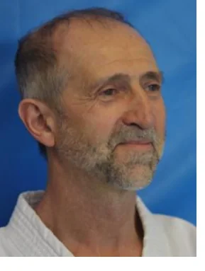
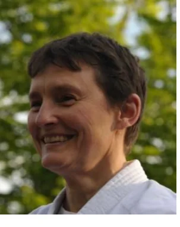
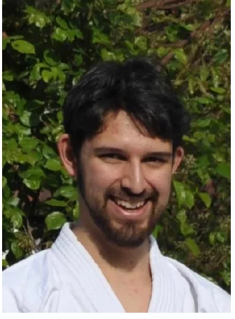
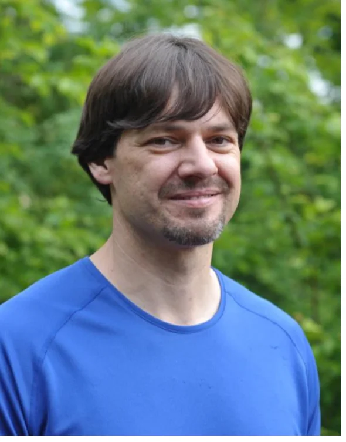
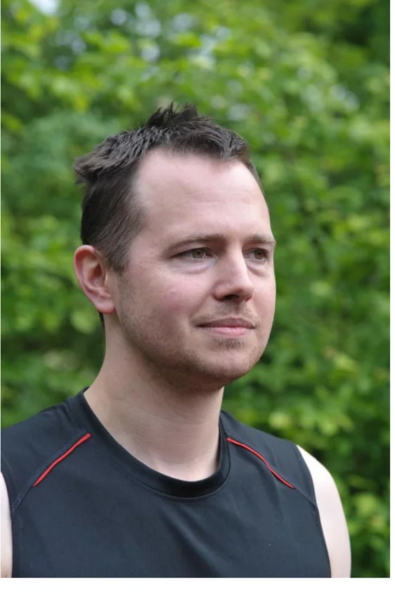
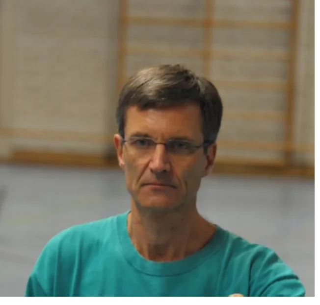
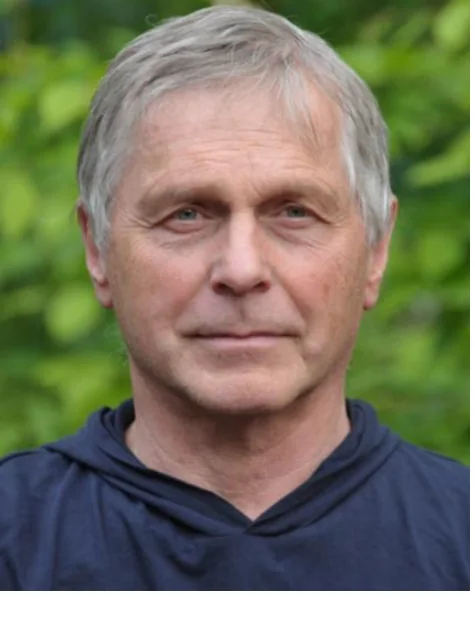
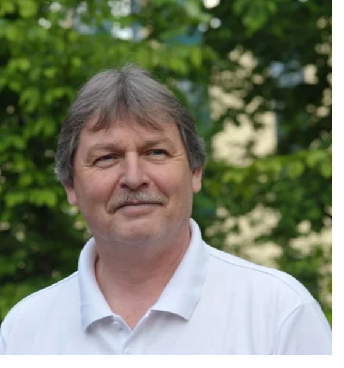

Trainerschaft













Kampfkunst wird weitergegeben.
Die Trainerinnen und Trainer bringen unterschiedliche Wege, Lizenzen und Vereinsaufgaben mit. Die Übersicht ist nach Sparten filterbar; ein Klick auf den Namen öffnet den Lebenslauf.
Qualifikationen
Lizenzen und Aufgaben in der Trainerschaft
Trainerlizenzen
- F-Übungsleiter (Fach Karate/Kickboxen)
- J-Übungsleiter (Jugend)
- A-Trainerlizenz
- Taiji-Lehrlizenz
- Qi-Gong-Lehrlizenz
- Takamura ha Shindō Yōshin Ryū Shoden-Lizenz
- Takamura ha Shindō Yōshin Ryū Chuden-Lizenz
Prüferlizenzen
- A-Prüferlizenz (Karate): Dan-Grade
- B-Prüferlizenz (Karate): bis zum 1. Kyu
- C-Prüferlizenz (Karate): bis zum 4. Kyu
Ämter
- Bundesstilrichtungsreferent(in)
- Landesstilrichtungsreferent(in)
Kampfrichterlizenzen
- Karate